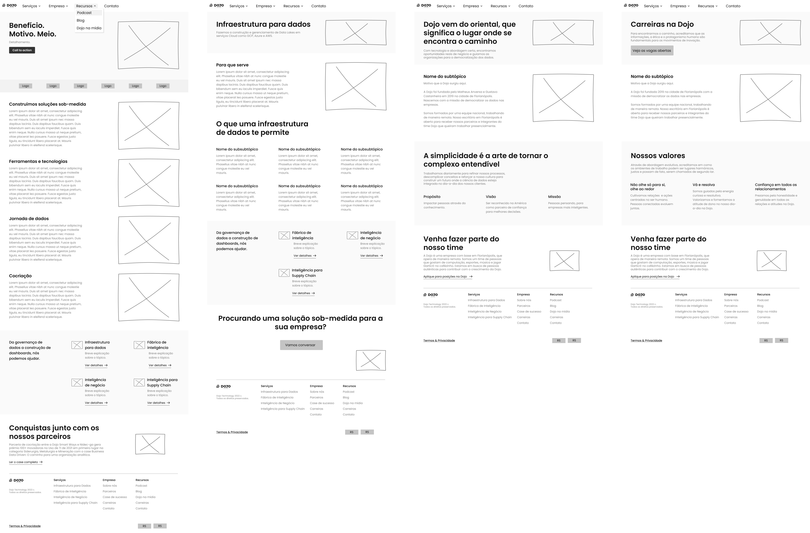

Dojo Website Redesign
Dojo's site hadn't kept pace with the company it had become. I ran a heuristic evaluation and a competitive analysis, then rebuilt the website end-to-end (research, UI, and front-end code), landing a 486% increase in organic traffic.
Overview
Dojo had outgrown its own website. As the company scaled, the site's branding no longer matched the business, and parts of its usability didn't hold up against basic heuristic guidelines. I owned the redesign end-to-end (research, UI/UX design, and front-end implementation), with the goal of giving Dojo a site that read as mature and established as the company had actually become.
The Problem
The site had two separate problems tangled together: a branding gap (a growing company still presenting itself the way it had at a much earlier stage), and a usability gap, where parts of the interface quietly violated standard heuristic guidelines without anyone having measured exactly where or why.
Research & Discovery
I started with a heuristic evaluation of the existing site, working with three other people who knew the usability heuristics well enough to catch what I might miss alone. That gave me a concrete list of usability problems to avoid repeating in the new design, instead of relying on instinct.

In parallel, I mapped and analyzed competitors in the same space, how they approached customers, which features they'd built that Dojo hadn't, and just as usefully, what they'd deliberately left out.
I treated research as ongoing rather than a single step, reading web design literature throughout the project to pressure-test my own decisions instead of designing in a vacuum.
Iterative Design
The heuristic findings and competitive research pointed to specific usability fixes. I started from the user flow to size up how many pages the new site actually needed, then moved into wireframes built around a small set of reusable structures, the same layout patterns repeated across pages to keep development fast and the experience consistent.
Every wireframed page went to the team as a medium-fidelity prototype before any visual design started, specifically to catch misaligned expectations early rather than after the site looked finished.

Once that structure was validated, I brought the design to full fidelity (color, imagery, and copy), then ran a second round of team validation on the finished visual design before it moved to development.


I also built the site myself, coding it in AngularJS, Tailwind, and Node.js and deploying via Google Cloud, no design-to-engineering handoff, because there was no separate engineer to hand off to.
Testing & Solution
Validation happened at two checkpoints, not one: the medium-fidelity prototypes were reviewed with the team before I touched color or imagery, and the finished high-fidelity design went through a second round of team review before development started. Catching misalignment at either point was far cheaper than catching it after the site shipped.
Impact & Learnings
- Comparing the same period before and after launch, the redesigned site drove a 486% increase in organic visits, all of it from search, not paid or referral traffic.
- SEO tags built into the code from the start meant the site consistently ranked at the top of search results for the company's name, which hadn't been true of the old site.
- Where the competitors I'd analyzed leaned business-like and sharp, I deliberately chose a more colorful, rounded visual language, a bet that a lighter, more playful feel would make a genuinely convoluted topic like data science easier to approach, without undercutting Dojo's credibility.
Key takeaway: The heuristic evaluation was what turned “the site feels outdated” into a fixable, prioritized list instead of a vague impression. Pairing that with real competitive research meant every visual decision (including the choice to look less corporate than everyone else in the space) was made on purpose, not by default.